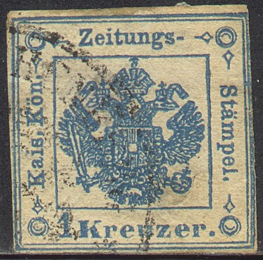
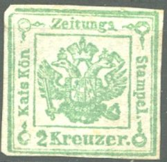
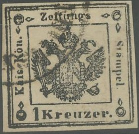
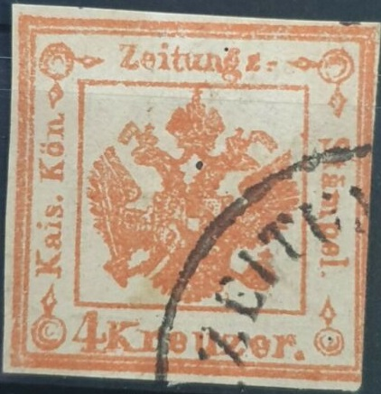

Return To Catalogue - Austria overview
Note: on my website many of the
pictures can not be seen! They are of course present in the
catalogue;
contact me if you want to purchase the catalogue.
1 k blue (large crown) 1 k blue (small crown) 2 k brown (large crown) 2 k brown (small crown) 2 k green (small crown) 4 k brown (large crown) Similar design, but colours changed for Lombardy-Venezia (Segnatasse per giornali)


1 k black 2 k red 4 k red
Value of the stamps |
|||
vc = very common c = common * = not so common ** = uncommon |
*** = very uncommon R = rare RR = very rare RRR = extremely rare |
||
| Value | Unused | Used | Remarks |
| 1 k blue | *** | * | large crown, two subtypes I (***) and II |
| 1 k blue | *** | c | small crown |
| 1 k black | RRR | RRR | reprints: R |
| 2 k brown | *** | * | large crown |
| 2 k brown | *** | * | small crown |
| 2 k green | RR | *** | |
| 2 k red | RR | *** | |
| 4 k brown | RR | RR | |
| 4 k red | RRR | RRR | reprints: R |
Large crown left and small crown right
Large crown subtypes: Type I left and Type II right
The central eagle design exists in two types: small crown and large crown. The large crown exist in two subtypes recognizable by the ribbon on the head of the left head of the eagle; in type I it is touching completely the eagle's head. In type II it is further away from the head. The 1 k blue exists in type I and II, the 1 k black only in type I (reprints in type II exist), the 2 k green in type I (reprints also in type I), 2 k brown in type II, the 2 k red in type II (reprints also in type II), the 4 k brown in type I (reprints in type II) and the 4 k red in type I (reprints in type II).
The 2 k green could also be used in Lombardy-Venezia. Example of a stamp used in Milano:

Reprints:

Reprint of the 4 k in the wrong type II

Probably also a reprint or forgery, printed in the wrong type II

Probably a reprint of the 4 k red, wrong type
Postal forgery:

This postal forgery of the 1 k blue has a break in the line next
to "Stampel", the "p" of this word is too
long, the "t" has no tail. There are many other
differences. Next to it a forgery of the 4 k brown, which might
have been made by the same forger.


Postal forgery of the1 K, note the large "K" in
"Kreuzer"; this is the so-called 'Rovereto
Postfälschung' with fiscal cancel of Rovereto
The Rovereto postal forgeries were used in 1875
and 1876. Only used forgeries are known to have survived all used
on the newspaper 'Il Raccoglitore' published in the town of
Rovereto. Most of them have the cancel 'Anno VII' or 'Anno VIII'
and a fiscal cancel of Rovereto (circle with eagle in the
center). This postmark was also forged by the forgers. At first a
smudged forgeries were used (usually with genuine cancel), later
much better printed forgeries appeared, used with a forged
cancel. The distinguishing characteristics are:
*) Large 'K' in 'Kreuzer'; different from the genuine stamps.
*) The corner ornaments touch the circles; in the genuine stamps
they are separated from the circles.
Forgeries:



Four different forgeries of the 2 k stamp

A whole set of forgeries made by the same forger. Note the heads
of the eagles.


Forgeries of the 1 k black value and 4 k brown; all made by the
same forger?


4 k red forgery, third forgery listed in Album Weeds

The "g" of "Zeitungs" is almost touching the
line below it in this forgery. The last two ones appear to have a
"ZEITUNGS" cancel, which
exists on many other forged stamps (even of other countries).


1 k black forgery, the upper left corner ornament is very far
from the word "Kon". There are extra lozenge ornaments
at the bottom.


2 k forgeries with 4-ring cancel. Note the clumsily done
"2".

Very dubious item, "2" and lettering different, but the
cancel appears genuine?
I've seen some forgeries of these stamps on (genuine?) old Italian Newspapers, examples:
2 k green and 2 k red (wrong type), the 2 k green with a
"DISTRIBUZIONE III" elliptic cancel and the 2 k red
with pencancel
Forgery of the 2 k green on (genuine?) newspaper of Milan,
reduced size
For more of these Italy States and Austrian forgeries on old documents, made by the same forger, click here. I've also seen such a 2 k green forgery with a millwheel-cancel.
I also possess some modern forgeries of the 1 k black (apparently made from a photograph, since all the details seem to be correct, there are some very small black dots in the white spaces, which can only be seen with a magnifying glass). I also possess a very blur 2 k green forgery, printed on yellowish paper, probably made by the same forger (they are often offered together with a 2 k red and 4 k red forgery on Internet auctions, also in combinations with other modern forgeries of the Italian States). See under Austrian Italy modern forgeries, for more details.
Modern forgeries, reduced sizes
The forger Sperati has made forgeries of the 1 k (two reproductions) and 4 k values. Sofar I have not seen any examples of these forgeries.
1 k brown 2 k green Larger size
25 k red
Value of the stamps |
|||
vc = very common c = common * = not so common ** = uncommon |
*** = very uncommon R = rare RR = very rare RRR = extremely rare |
||
| Value | Unused | Used | Remarks |
| 1 k | * | c | |
| 2 k | ** | c | |
| 25 k | *** | *** | |
I've seen the 1 k value with private perforation.


{kind=link}
{kind=link}
{kind=link}
{kind=link}
{kind=link}
{kind=link}